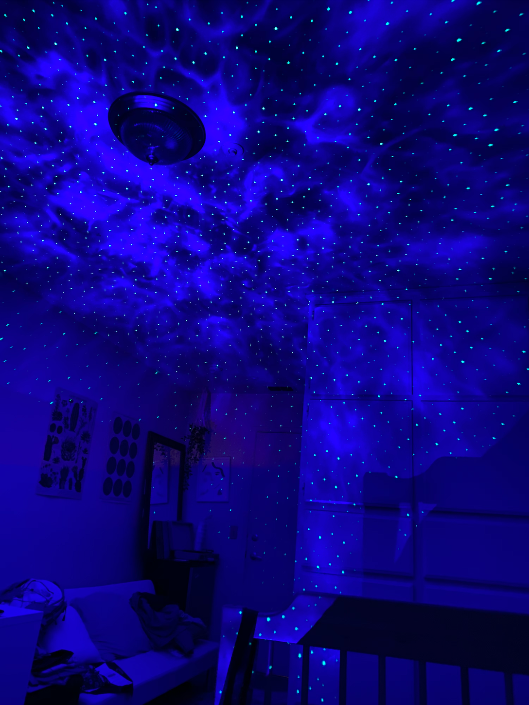

Because I don’t have good images of my pets back home, I decided to draw them instead and then use fun images as the background. I wanted to make it really funky and have my snake at the beach
and my dog in the sky or something like that. With that being said, one of the background images I want to use is of my bedroom at night with some cool lights on. I think this would be an
interesting background for my goldfish graphic just because you don’t see a goldfish out of water and i thought it would be kind of cool to have it floating! The image itself is really interesting
too because the lights bring out such a different aspect and makes everything bright yet still dark. Some other images I plan to use are one of the sunset and one of the beach. This collection
represents various environments that these animals could technically live in but with a twist! I might just keep them in their actual environment too if I don’t like how it looks later on.
 My room with lights!
I exchanged images with Megan Wang and I’m excited to see her final results! It looks like her project will be about her cat (or a cat?). She plans to use only one image and have the zoom in effect
which, I assume, means that she might be sharing details of the cat’s anatomy. I think the most interesting part of the image is the cat’s features (especially the eyes). The greenness of the eyes can
really draw you in and hold your focus. The outfit the cat is wearing also gives the viewers some hint as to what’s going on and where the cat’s at which is interesting. I think the image itself is a
bit mysterious because it looks like you took your cat on a hike which seems uncommon since you don’t really walk your cat but the image could also be from a photoshoot since the cat is posed (sort of)
and wearing an outfit. It’s all up for interpretation I guess!
Megan Wang's Cat!
Learning Journal 3:
10 Intriguing Photographs to Teach Close Reading and Visual Thinking Skills
As a visual learner, I really appreciate all the comments, ideas, and suggestions on how to actively engage with images and practice some
visual thinking skills. Idea #2 about practicing close reading regularly was really interesting to me. The idea of posting an image without
any captions or contexts and have students write in what they thought the image meant sounds really fun and a great way to engage an audience
using visuals. Additionally, I also liked Idea #7 about how visuals can start conversations. I think there’s so many interpretations within one
image that people are bound to have different outputs. For example, there was an image of a dress that went viral a couple of years ago. There was
a division between the public about whether the dress was white and gold or blue and black. It’s interesting to think that we all perceive things
differently and how a photograph can spark a national conversation.
The website I chose was RoandCo's page. I love how interactive they are with their slideshow and they just
have an amazing use of color and visuals. I really enjoyed looking through all the work they've created. I like that they also had a 2 column thing going on
for some slides just because it was a good opportuinity to continue showcasing that specific project without having the users change slides. I really enjoyed this
and thought they did great with keeping the user experience in mind.
When I think of modals, I mainly think of Login/Sign-Up Forms. I agree with the writer that it's an effective use for
grabbing the user's attention but can sometimes come off as "annoying". One thing I found interesting was how modals should not
surprise the users by popping up unexpectedly. I guess it makes sense to have some sort of button that activates the modal but I
kind of don't mind a pop-up either. I feel like I've seen a few websites that have an automatic login pop-up and it doesn't change
my user experience personally.
On another note, I enjoyed reading the article and found some very useful tips. I raelly liked how the writer provided reasoning behind
every practice listed. For example, she mentions how you can get the user to focus on the modal by using the lightbox effect and darkening
the background. She claims that this will draw attention to the modal and show that the parent page can't be interacted with as long as the
modal is open.
If I was just starting out in UX/UI and Web Development, I would find this article informative.
But based on my past experiences in DES 112 and DES 117, I, personally, found this article not as helpful.
I felt like I know a lot of these tips and tricks already. For example, the article talks about adding labels as a
form of captions or asking the easy questions first. Based on what I learned in Des 112, I’ve also come to notice these
attributes really do help with the user’s experience. There was one tip I found interesting! I didn’t know we should avoid
using asterisks (“*”). The article mentions how you should avoid labeling the required aspects of the interaction and label
the optional one instead but I feel like I see a fair amount of asterisks on websites as well (the most notable one is the
Google Forms). Overall, I enjoyed the reading and found it slightly informative.